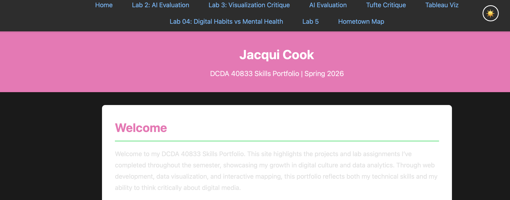
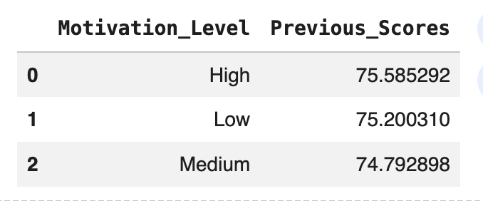
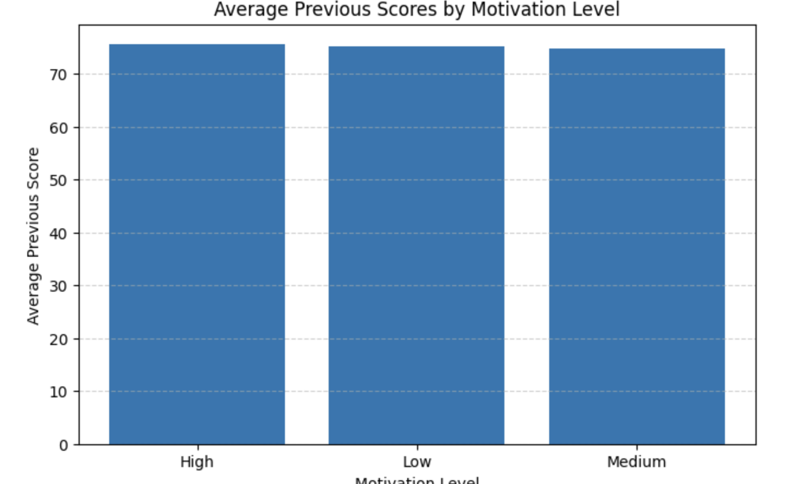

Overview
Lab 05 explores how AI can assist with both front-end development and data visualization. I completed two experiments: enhancing my portfolio with a dark mode toggle (Experiment A) and creating a beginner-friendly visualization in Google Colab (Experiment B).
Experiment A: Dark Mode Toggle
For Experiment A, I added a dark mode toggle to my portfolio homepage using AI assistance from Claude Sonnet 4.5. The feature allows users to switch between light and dark themes using a button in the navigation bar.
I understood how the HTML button connects to JavaScript, how a CSS class is
toggled on the body element, and how color variables change the
site’s appearance. AI helped generate the initial JavaScript logic and
troubleshoot layout issues.
This work falls in the guided understanding range of the Understanding Spectrum.
Experiment B: Data Visualization in Google Colab
For Experiment B, I used Google Colab to analyze a public dataset on student performance. I grouped the data by motivation level and calculated the average previous academic score for each group.
Using pandas and matplotlib, I created a bar chart showing how motivation level relates to average scores. I understood the data grouping, averaging, and how the visualization communicates patterns clearly. AI helped with code structure and debugging.
Vibe Coding Guidelines
I used AI as a collaborative tool rather than a shortcut. I only kept code that I could explain, tested changes incrementally, and focused on clarity and usability over complexity.
Demo & Screenshots


